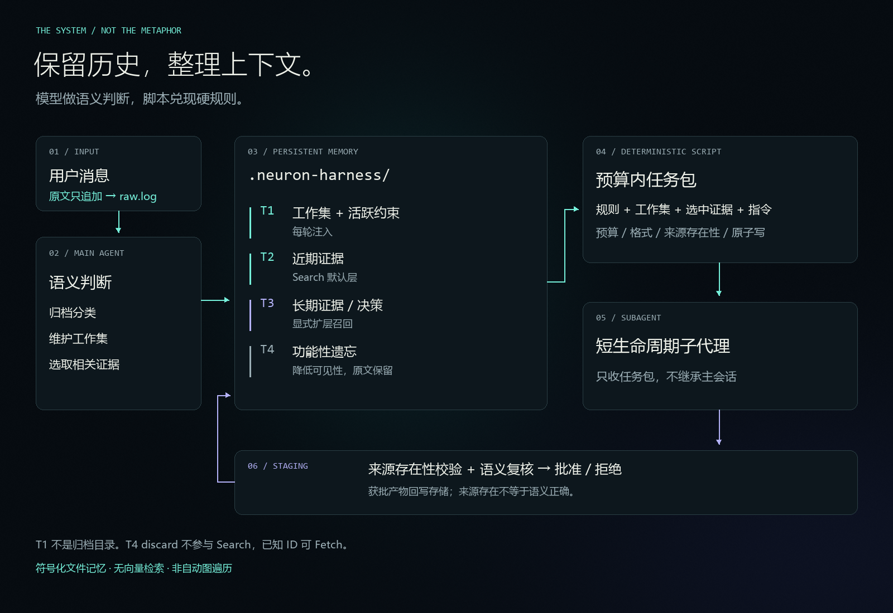

T1 / ACTIVE WORKING SETMEMORY METAPHOR · 非神经网络模型 ·
YOUR HARNESS. YOUR FILES.
从完整历史，到干净交接。
主代理负责判断，脚本负责执行。没有常驻服务，也不绑定某一种 harness。
~/neuron-harness
参数已省略，完整命令见 README。此处是流程示意，不是速度实测。
需要 harness 注入判据并维护工作集。记录消息不等于自动归档，选取也不是向量检索。
THE FILM
记忆不消失，只改变距离。
24 秒无声演示。网络是记忆组织隐喻；任务包是每轮实际注入的有限视图。
THE SYSTEM / NOT THE METAPHOR
漂亮之外，机制也要讲清。
原文在模型外留存。主代理进行语义判断，脚本处理预算、格式、来源存在性与原子写。

ONE IDENTITY / EVERY SURFACE
同一个品牌，不同的画布。
README、社交预览、宣传海报各自排版，不裁切同一张图硬塞。